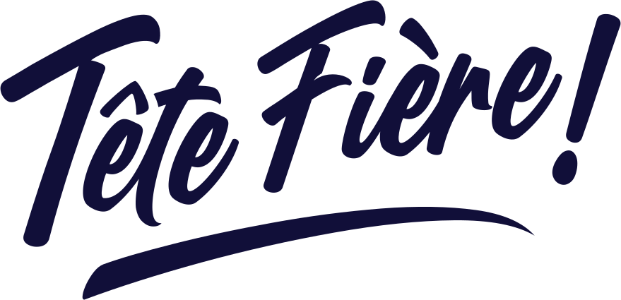

Boucles d'oreilles artisanales
Créées avec le cœur,
portées avec fierté.
Des boucles d'oreilles en résine, créées à la main. Des petites pièces qui font toute la différence.
Faites main
Chaque paire est créée à la main, avec cœur.
En résine
Des teintes douces, nacrées, pleines de couleur.
Made in Belgium
Une création de chez nous, à découvrir près de chez vous.
Boucles artisanales, créées à la main, avec cœur. Des petites pièces qui font toute la différence.
Les créations
La petite touche de couleur pour sublimer vos tenues


Où nous trouver
Mes créations, en vrai, à Huy.
Mes premières créations vous attendent chez Rose, Concept Store. D'autres adresses arriveront plus tard.
Rose, Concept Store
Grand Place 24, Huy
Une boutique remplie de pépites, de jolies découvertes et de créations Made in Belgium. N'hésitez pas à aller y faire un petit tour !
Voir la boutique sur Facebook
Un petit coucou ?
Une question, une envie, une idée ? Écrivez-moi, ou venez suivre les nouveautés sur les réseaux.
savoiapauline.creation@gmail.com